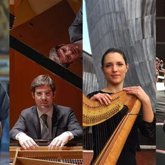

lun 23 nov · dalle 20:30
Lunedì Sinfonica in Cavallerizza
Quattro concerti, dal 21 settembre al 7 dicembre, portano la musica sinfonica e il grande repertorio orchestrale nel nuovo Spazio Culturale Creativo di Udine. “Lunedì Sinfonica” torna in Cavallerizza e da settembre si struttura in una vera e propria rassegna promossa e…
 Indicazioni
Indicazioni
- Costi e prenotazioni
- Costo non indicato · Prenotazione non indicata
- Programma
- Programma da verificare. Apri la fonte ufficiale per orari e possibili aggiornamenti.
- In caso di maltempo
- Nessuna indicazione specifica pubblicata.
- Note
- Acquisito automaticamente dalla fonte.
L’EVENTO
Descrizione completa
Quattro concerti, dal 21 settembre al 7 dicembre , portano la musica sinfonica e il grande repertorio orchestrale nel nuovo Spazio Culturale Creativo di Udine. “Lunedì Sinfonica” torna in Cavallerizza e da settembre si struttura in una vera e propria rassegna promossa e realizzata dall’ Orchestra giovanile Filarmonici Friulani , con un calendario che attraversa quattro mesi e riunisce sul palco giovani direttori e solisti già affermati sulla scena nazionale e internazionale.
Il terzo appuntamento, lunedì 23 novembre alle 20.30 , porta in Cavallerizza Silvia Podrecca, arpista friulana che dal 2022 ricopre il ruolo di Prima Arpa solista dell’Orchestra dell’Accademia Nazionale di Santa Cecilia di Roma. Formata al Conservatorio “J. Tomadini” di Udine, Podrecca ha collaborato con importanti istituzioni orchestrali italiane ed europee, dalla Deutsche Oper di Berlino alla Staatsoper di Hannover, dal Maggio Musicale Fiorentino all’Orchestra Sinfonica Nazionale della RAI. Sul podio ci sarà Leonardo Grimaz , giovane direttore e violoncellista friulano che con OFF condivide già una parte importante del proprio percorso musicale. Presente spesso tra le file dell’Orchestra e componente del suo quartetto di violoncelli, Grimaz studia direzione d’orchestra e ha già guidato i Filarmonici Friulani in alcuni progetti speciali realizzati insieme all’orchestra inclusiva AMI-Ritmea di Udine. Al centro del programma ci sarà il Concerto per arpa e orchestra di Nino Rota , con Podrecca solista, affiancato da Deux marches et un intermède di Francis Poulenc e dalla Sinfonia n. 29 in La maggiore K 201 di Wolfgang Amadeus Mozart. Tre pagine accomunate da una scrittura diretta e luminosa, con il Concerto di Rota a mostrare le possibilità virtuosistiche ed espressive dell’arpa e la Sinfonia di Mozart, composta a soli diciotto anni, già capace di rivelare la maturità del suo autore.
IL PROGRAMMA
Programma e orari
Appuntamenti raccolti dalle fonti elencate. Dove manca un orario, non è ancora disponibile in questa scheda.
Programma pubblicato
- Dal 2026-11-23 al 2026-11-23
INFORMAZIONI UTILI
Prima di partire
- Controllare la fonte prima di partire.
ORGANIZZAZIONE